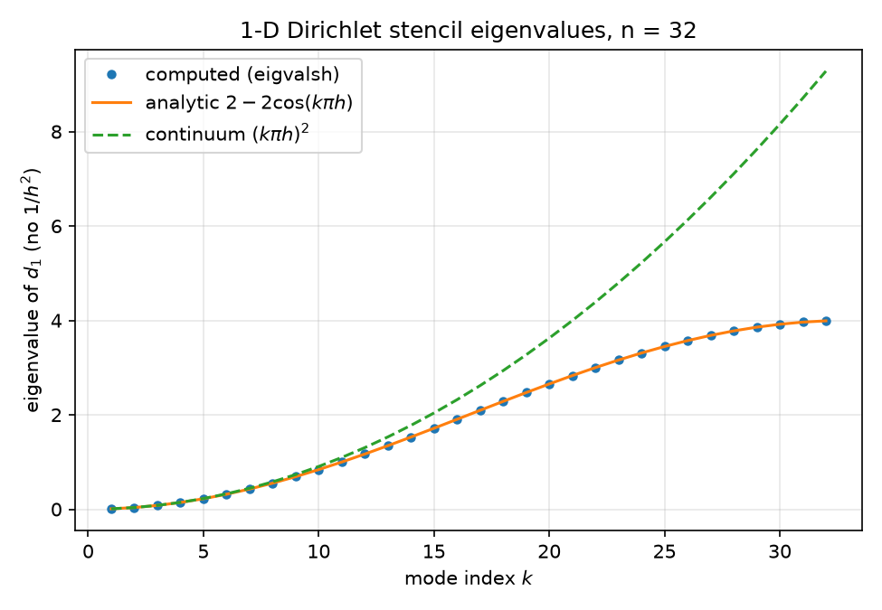
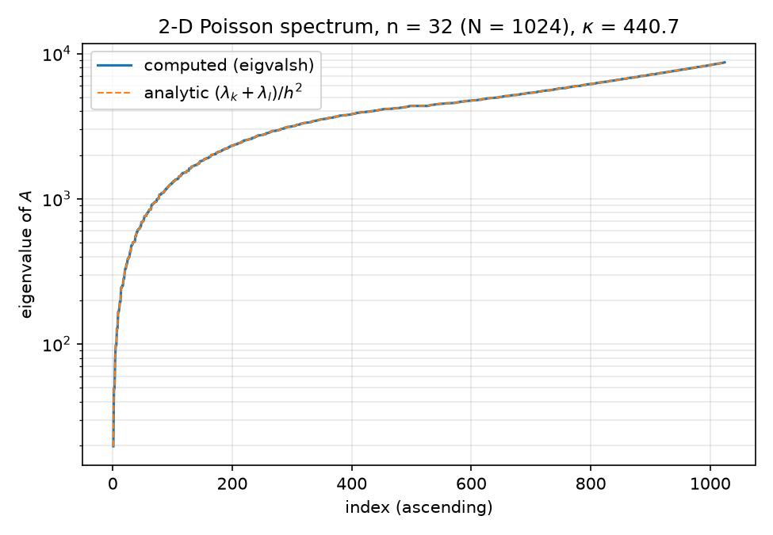
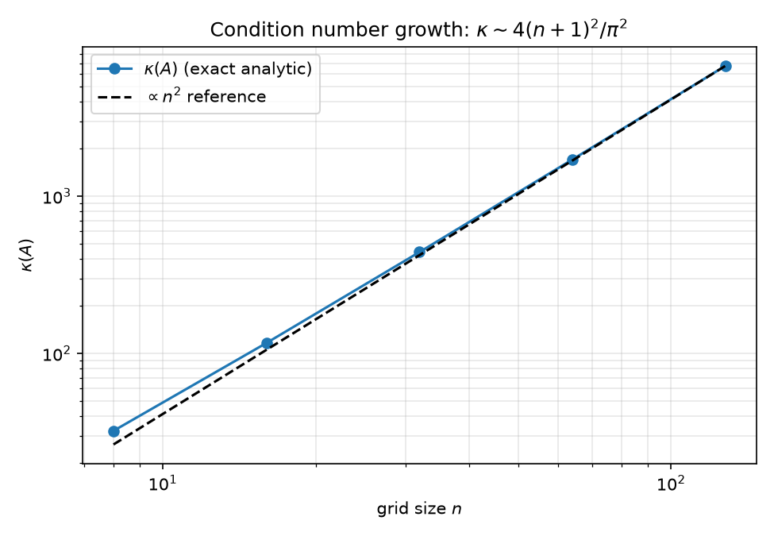

This report derives, from scratch, the complete spectral theory of the two matrices this repo is built on:
Everything is closed-form. Every formula below is verified numerically in python/experiments/spectra.py (output: results/spectra.json) and independently in Mathematica by mathematica/eigen_check.wls. The headline numbers at $n = 32$ ($N = n^2 = 1024$):
| quantity | analytic | computed (eigvalsh) |
max deviation |
|---|---|---|---|
| $\mathrm{spec}(d_1)$ | $2 - 2\cos\frac{k\pi}{n+1}$ | dense eigensolve | $2.22 \times 10^{-15}$ |
| $\mathrm{spec}(A)$ | $(\lambda_k + \lambda_l)/h^2$ | dense eigensolve | $2.73 \times 10^{-11}$ |
| $\lambda_{\min}(A)$ | $19.72430527164353$ | $19.724305271649925$ | — |
| $\lambda_{\max}(A)$ | $8692.275694728356$ | $8692.27569472836$ | — |
| $\kappa(A)$ | $440.6885603836582$ | $440.6885603835139$ | $3.3\times10^{-13}$ relative |
(All values from results/spectra.json.) The $2.73\times10^{-11}$ absolute deviation for $A$ is not worse conditioning of the eigensolve — it is machine epsilon at the scale of the eigenvalues: $2.73\times10^{-11}/8692 \approx 3\times10^{-15}$, i.e. the same $\sim$ few-ulp relative accuracy as the 1-D check.
Cross-links: the matrices themselves are walked through in 01-code-walkthrough.md; the right-hand side these matrices are solved against is 03-gaussian-random-fields.md; the consequence of this spectrum for CG iteration counts is 04-krylov-and-pcg.md; what preconditioners do to this spectrum is §8 below and 05-classical-preconditioners.md, 06-neural-preconditioner.md, 07-nystrom-preconditioning.md; the full experimental table is 08-results.md.
$d_1$ discretizes $-u''$ on $(0,1)$ with homogeneous Dirichlet data $u(0) = u(1) = 0$, on the $n$ interior nodes $x_j = jh$, $j = 1, \dots, n$, $h = 1/(n+1)$ (the stencil matrix carries no $1/h^2$ factor — that is applied once, in 2-D, at python/poisson.py:67). Row $j$ of the eigenproblem $d_1 v = \lambda v$ reads
$$ -v_{j-1} + 2v_j - v_{j+1} = \lambda v_j, \qquad j = 1, \dots, n, $$
where the boundary conditions enter as the convention
$$ v_0 = 0, \qquad v_{n+1} = 0. $$
This is exactly a linear three-term recurrence in $j$ with two boundary constraints — a discrete two-point boundary value problem. We solve it the way one solves any constant-coefficient linear recurrence.
Step 1 — characteristic equation. Rewrite the recurrence as
$$ v_{j+1} - (2 - \lambda)\, v_j + v_{j-1} = 0 . $$
Seek solutions $v_j = r^j$. Substituting gives the characteristic polynomial
$$ r^2 - (2 - \lambda)\, r + 1 = 0 , $$
with roots $r_\pm$ satisfying
$$ r_+ r_- = 1, \qquad r_+ + r_- = 2 - \lambda . $$
The roots are reciprocal. Write $r_+ = r$, $r_- = r^{-1}$; the general solution (for $r \neq \pm 1$, i.e. distinct roots) is
$$ v_j = \alpha\, r^j + \beta\, r^{-j}. $$
Step 2 — impose the left boundary. $v_0 = \alpha + \beta = 0$ forces $\beta = -\alpha$, so
$$ v_j = \alpha\left(r^j - r^{-j}\right). $$
Step 3 — impose the right boundary. $v_{n+1} = \alpha\left(r^{n+1} - r^{-(n+1)}\right) = 0$ with $\alpha \neq 0$ (else $v \equiv 0$) requires
$$ r^{2(n+1)} = 1 , $$
so $r$ is a $2(n+1)$-th root of unity:
$$ r = e^{i\theta_k}, \qquad \theta_k = \frac{k\pi}{n+1}, \qquad k \in \mathbb{Z}. $$
Since $d_1$ is symmetric its eigenvalues are real, and indeed $\vert r\vert = 1$ makes $\lambda = 2 - (r + r^{-1}) = 2 - 2\cos\theta_k$ real automatically. The values $k = 1, \dots, n$ give distinct $\theta_k \in (0, \pi)$ hence distinct eigenvalues ($2 - 2\cos\theta$ is strictly increasing on $(0,\pi)$); $k = 0$ and $k = n+1$ give $r = \pm 1$ (the excluded repeated-root cases) and only the trivial solution; $k > n+1$ and $k < 0$ repeat the same eigenvectors up to sign. So we have exactly $n$ eigenpairs — the complete spectrum.
Step 4 — read off the eigenvector. With $r = e^{i\theta_k}$,
$$ v_j = \alpha\left(e^{ij\theta_k} - e^{-ij\theta_k}\right) = 2i\alpha \sin(j\theta_k), $$
so choosing $\alpha = 1/(2i)$:
$$ \boxed{\; v^{(k)}_j = \sin\!\left(\frac{jk\pi}{n+1}\right) = \sin(k\pi x_j), \qquad \lambda_k = 2 - 2\cos\!\left(\frac{k\pi}{n+1}\right), \qquad k = 1, \dots, n . \;} $$
The discrete eigenvectors are the continuum Dirichlet eigenfunctions $\sin(k\pi x)$ sampled exactly at the grid nodes — a special property of the uniform-grid $[-1,2,-1]$ stencil, and the reason every spectral quantity below is exactly computable.
Equivalent forms of $\lambda_k$. Using the half-angle identity $1 - \cos\theta = 2\sin^2(\theta/2)$:
$$ \lambda_k = 2 - 2\cos(k\pi h) = 4\sin^2\!\left(\frac{k\pi h}{2}\right) = 4\sin^2\!\left(\frac{k\pi}{2(n+1)}\right). $$
The $4\sin^2$ form makes positivity manifest ($d_1 \succ 0$: every $\lambda_k > 0$ since $0 < \frac{k\pi}{2(n+1)} < \frac{\pi}{2}$) and is the form used for the exact condition number in §6. This is the formula implemented in python/experiments/spectra.py lines 41–44 (d1_eigs_analytic) and checked at line 64: max deviation $2.22\times10^{-15}$ against numpy.linalg.eigvalsh — exactly $10\,\varepsilon_{\mathrm{mach}}$, i.e. exact to a few ulps.
Small-$\theta$ and band-edge behavior. Taylor expansion at the bottom of the band:
$$ \lambda_k = 4\sin^2\!\left(\frac{k\pi h}{2}\right) = (k\pi h)^2 \left(1 - \frac{(k\pi h)^2}{12} + O\big((k\pi h)^4\big)\right), $$
so the low modes reproduce the continuum eigenvalues $(k\pi)^2$ of $-d^2/dx^2$ (after the $1/h^2$ scaling) with $O(h^2)$ relative error, while high modes ($k$ near $n$) saturate: $\lambda_k \to 4$ as $k\pi h \to \pi$. This flattening is visible in

— computed dots sit exactly on the analytic $2 - 2\cos$ curve, and both peel away from the continuum parabola $(k\pi h)^2$ once $k\pi h$ is no longer small.Spectral symmetry. Substituting $k \mapsto n+1-k$ gives $\cos\!\big((n+1-k)\pi h\big) = \cos(\pi - k\pi h) = -\cos(k\pi h)$, hence
$$ \lambda_{n+1-k} = 4 - \lambda_k . $$
The 1-D spectrum is symmetric about $2$ (the diagonal entry). This innocuous identity has a 2-D consequence used in §5.
Orthogonality. Normalize the eigenvectors. Define the matrix
$$ S_{jk} = \sqrt{\frac{2}{n+1}}\, \sin\!\left(\frac{jk\pi}{n+1}\right), \qquad 1 \le j, k \le n . $$
This is the Discrete Sine Transform of type I (DST-I). The normalization comes from the discrete orthogonality relation
$$ \sum_{j=1}^{n} \sin\!\left(\frac{jk\pi}{n+1}\right)\sin\!\left(\frac{jl\pi}{n+1}\right) = \frac{n+1}{2}\,\delta_{kl}, \qquad 1 \le k, l \le n, $$
which follows from product-to-sum ($2\sin a \sin b = \cos(a-b) - \cos(a+b)$) and the closed geometric sum $\sum_{j=0}^{n} \cos\frac{jm\pi}{n+1} \in \{0, 1\}$ for integer $m \not\equiv 0 \pmod{2(n+1)}$; for $k = l$ the $\cos(a-b)$ term contributes $n$ ones and the correction terms assemble to $(n+1)/2$. (Alternatively: eigenvectors of a symmetric matrix with distinct eigenvalues are automatically orthogonal; the relation just fixes the norm.)
$S$ is symmetric ($S_{jk} = S_{kj}$ by inspection) and orthogonal, hence involutory:
$$ S = S^{\mathsf T} = S^{-1}, \qquad S^2 = I . $$
The eigendecomposition of the 1-D stencil is therefore
$$ d_1 = S\, \Lambda\, S, \qquad \Lambda = \operatorname{diag}(\lambda_1, \dots, \lambda_n) . $$
Fast Poisson solver. Because (a) $S$ diagonalizes $d_1$, (b) the 2-D operator is a Kronecker sum (§4), and (c) applying $S$ to a vector is a DST-I computable in $O(n\log n)$ via FFT (e.g. scipy.fft.dstn(..., type=1)), the exact solve $Au = b$ reduces to three passes:
$$ \hat b = (S \otimes S)\, b, \qquad \hat u_{kl} = \frac{h^2\, \hat b_{kl}}{\lambda_k + \lambda_l}, \qquad u = (S \otimes S)\, \hat u . $$
$(S \otimes S)b$ is a DST-I applied along each of the two grid axes: $2n$ transforms of length $n$, total $O(n^2 \log n) = O(N \log N)$, versus $O(N \cdot n^2) = O(N^2)$ to factor with banded Cholesky (bandwidth $n = \sqrt{N}$; only its triangular solves are $O(N^{3/2})$), $O(N^{3/2})$ for sparse Cholesky with nested-dissection ordering, and $O(N \cdot \sqrt{\kappa}) = O(N^{3/2})$ for unpreconditioned CG (§6). This is the classical "fast Poisson solver," and it is exact — no iteration at all. This repo deliberately does not implement it: the constant-coefficient Poisson problem here is a fully-instrumented testbed whose ground truth is knowable, used to study preconditioned Krylov methods that generalize to problems (like variable_poisson_2d, python/poisson.py lines 71–128) where no DST diagonalization exists. See 01-code-walkthrough.md.
The 2-D operator is assembled at python/poisson.py:67 as
$$ A = \frac{1}{h^2}\left(d_1 \otimes I_n + I_n \otimes d_1\right), $$
a Kronecker sum, often written $A = (d_1 \oplus d_1)/h^2$. The grid function $u(x_i, y_j)$ is flattened row-major with flat index $\;\mathtt{k} = i\cdot n + j$ (first axis slowest — matching Mathematica's Flatten; see python/poisson.py lines 9–11), so kron(d1, I) differences along the $x$ (slow) axis and kron(I, d1) along $y$.
Theorem (Kronecker-sum eigenpairs). Let $B \in \mathbb{R}^{n\times n}$ have eigenpairs $(\mu_k, v^{(k)})$ and $C \in \mathbb{R}^{m\times m}$ have eigenpairs $(\nu_l, w^{(l)})$. Then
$$ \left(B \otimes I_m + I_n \otimes C\right)\left(v^{(k)} \otimes w^{(l)}\right) = \left(\mu_k + \nu_l\right)\left(v^{(k)} \otimes w^{(l)}\right), $$
and if $\{v^{(k)}\}$, $\{w^{(l)}\}$ are each complete (e.g. $B$, $C$ symmetric), the $nm$ vectors $v^{(k)} \otimes w^{(l)}$ form a complete eigenbasis, so $\operatorname{spec}(B \oplus C) = \{\mu_k + \nu_l\}$ with multiplicities counted over all pairs $(k,l)$.
Proof. Use the mixed-product identity $(B \otimes C)(x \otimes y) = Bx \otimes Cy$ (immediate from block structure: block $(i,i')$ of $B\otimes C$ is $B_{ii'}C$, so row-block $i$ of $(B\otimes C)(x\otimes y)$ is $\sum_{i'} B_{ii'} x_{i'} \, C y = (Bx)_i \, Cy$). Then
$$ (B \otimes I)(v \otimes w) = Bv \otimes w = \mu\,(v \otimes w), \qquad (I \otimes C)(v \otimes w) = v \otimes Cw = \nu\,(v \otimes w), $$
and adding gives the claimed eigenrelation. For completeness: if $\{v^{(k)}\}_{k=1}^n$ and $\{w^{(l)}\}_{l=1}^m$ are orthonormal bases, then $\langle v^{(k)}\otimes w^{(l)},\, v^{(k')}\otimes w^{(l')}\rangle = \langle v^{(k)}, v^{(k')}\rangle\,\langle w^{(l)}, w^{(l')}\rangle = \delta_{kk'}\delta_{ll'}$, so the $nm$ tensor products are orthonormal, hence a basis of $\mathbb{R}^{nm}$. $\blacksquare$
Note the contrast with the Kronecker product: $\operatorname{spec}(B \otimes C) = \{\mu_k \nu_l\}$ (eigenvalues multiply); for the Kronecker sum they add. Same eigenvectors in both cases.
Applied to $A$. With $B = C = d_1$ and the $1/h^2$ scaling:
$$ \boxed{\; \Lambda_{k,l} = \frac{\lambda_k + \lambda_l}{h^2} = \frac{4}{h^2}\left[\sin^2\!\left(\frac{k\pi h}{2}\right) + \sin^2\!\left(\frac{l\pi h}{2}\right)\right], \qquad V^{(k,l)}_{(i,j)} = \sin(k\pi x_i)\,\sin(l\pi y_j), \;} $$
for $k, l = 1, \dots, n$ — the sampled continuum eigenfunctions $\sin(k\pi x)\sin(l\pi y)$, again exactly. The 2-D diagonalizer is $S \otimes S$ (2-D DST-I), which is what makes §3's fast solver work.
Verification. python/experiments/spectra.py lines 67–74 forms all $1024$ tensor sums (eigs_d1_ana[:,None] + eigs_d1_ana[None,:]).ravel() / h**2, sorts, and compares against eigvalsh(A.toarray()): max deviation $2.73\times10^{-11}$ on eigenvalues of magnitude up to $8.7\times10^3$ (relative $\sim 3\times10^{-15}$, i.e. float64-exact). The independent Mathematica check mathematica/eigen_check.wls (lines 29–38) does the same with Eigenvalues and Outer[Plus, ...]. The sorted spectrum overlay is

.At $n = 32$, $h = 1/33$, from results/spectra.json:
Smallest eigenvalue ($k = l = 1$):
$$ \lambda_{\min}(A) = \frac{8}{h^2}\sin^2\!\left(\frac{\pi h}{2}\right) = 19.72430527164353 \quad\xrightarrow{h\to 0}\quad 2\pi^2 = 19.7392088\ldots $$
The continuum limit is the fundamental Dirichlet eigenvalue $\pi^2(1^2 + 1^2) = 2\pi^2$ of $-\Delta$ on the unit square. The discrete deficit follows §2's expansion:
$$ \lambda_{\min}(A) = 2\pi^2\left(1 - \frac{(\pi h)^2}{12} + O(h^4)\right), \qquad \frac{(\pi h)^2}{12}\bigg\vert _{h = 1/33} = 7.55\times10^{-4}, $$
and indeed $(2\pi^2 - 19.72431)/2\pi^2 = 7.55\times10^{-4}$ — the standard $O(h^2)$ consistency of the 5-point stencil, visible here as an eigenvalue statement.
Largest eigenvalue ($k = l = n$). Using $\sin\frac{n\pi h}{2} = \sin\!\big(\frac{\pi}{2} - \frac{\pi h}{2}\big) = \cos\frac{\pi h}{2}$:
$$ \lambda_{\max}(A) = \frac{8}{h^2}\cos^2\!\left(\frac{\pi h}{2}\right) = 8692.275694728356 \quad\xrightarrow{h\to 0}\quad \frac{8}{h^2} = 8(n+1)^2 = 8712 . $$
Unlike $\lambda_{\min}$, this does not converge to any continuum eigenvalue — it diverges as $8/h^2$, tracking the top of the discrete band ($4$ per dimension in stencil units, cf. Gershgorin: every disc is centered at $4/h^2$ with radius $\le 4/h^2$, so $\operatorname{spec}(A) \subset (0, 8/h^2)$). The highest mode is the checkerboard $\sin(n\pi x_i)\sin(n\pi y_j) = (\pm 1)^{i+j}\sin(\pi x_i)\sin(\pi y_j)$-modulated oscillation — pure grid-scale noise with no continuum counterpart.
Exact spectral symmetry. From §2's identity $\lambda_{n+1-k} = 4 - \lambda_k$, the map $(k,l) \mapsto (n+1-k,\, n+1-l)$ sends
$$ \Lambda_{k,l} \;\longmapsto\; \frac{8}{h^2} - \Lambda_{k,l}, $$
so the 2-D spectrum is exactly symmetric about its center $4/h^2 = 4(n+1)^2 = 4356$. Consequences checked in the results:
eig_A.median);The semilog sorted spectrum shows both features: a steep initial rise (few small eigenvalues) followed by a long, slowly-climbing shoulder — by index 434 of 1024 the eigenvalues already exceed $4\times10^3$, i.e. within a factor $\sim 2.2$ of $\lambda_{\max}$.
Since $A$ is SPD, $\kappa_2(A) = \lambda_{\max}/\lambda_{\min}$, and both extremes share the factor $8/h^2$:
$$ \kappa(A) = \frac{\sin^2(n\pi h/2)}{\sin^2(\pi h/2)} = \frac{\cos^2(\pi h/2)}{\sin^2(\pi h/2)} = \cot^2\!\left(\frac{\pi}{2(n+1)}\right). $$
The $\sin^2$-ratio form is implemented in python/experiments/spectra.py lines 47–50 (kappa_analytic); the $\cot^2$ form is the one used by the independent Mathematica check (mathematica/eigen_check.wls:42, Cot[Pi/(2(n+1))]^2) — identical by the reflection $\sin(n\pi h/2) = \cos(\pi h/2)$. At $n = 32$:
$$ \kappa(A) = 440.6885603836582 \text{ (exact analytic)}, \qquad 440.6885603835139 \text{ (dense eigensolve)}, $$
agreeing to $3.3\times10^{-13}$ relative — every printed digit in both the Python and Mathematica runs.
Asymptotics. $\cot x = 1/x - x/3 + O(x^3)$, so with $x = \frac{\pi}{2(n+1)}$:
$$ \kappa(A) = \frac{4(n+1)^2}{\pi^2} - \frac{2}{3} + O(n^{-2}) . $$
At $n = 32$ the leading term is $4 \cdot 33^2/\pi^2 = 441.3551$ (results/spectra.json, kappa_asymptotic_4n1sq_over_pisq), overshooting the exact $440.6886$ by $0.667 \approx 2/3$ — the next Taylor coefficient, visible in the data.
$O(n^2)$ growth, from the exact formula (kappa_vs_n_analytic / kappa_over_nsq in results/spectra.json):
| $n$ | $\kappa(A)$ (exact) | $\kappa/n^2$ |
|---|---|---|
| 8 | 32.163 | 0.50255 |
| 16 | 116.461 | 0.45493 |
| 32 | 440.689 | 0.43036 |
| 64 | 1711.661 | 0.41789 |
| 128 | 6743.677 | 0.41160 |
$\kappa/n^2$ descends monotonically toward the limit $4/\pi^2 = 0.405285$ (the residual gap is the $(n+1)^2/n^2$ factor plus the $-2/3$ correction). The log-log plot

is parallel to the $n^2$ reference by $n = 32$.What this costs CG. The classical CG bound (derived in 04-krylov-and-pcg.md) gives, in the $A$-norm,
$$ \Vert e_j\Vert _A \le 2\left(\frac{\sqrt{\kappa}-1}{\sqrt{\kappa}+1}\right)^{j} \Vert e_0\Vert _A . $$
With $\kappa = 440.689$: $\sqrt{\kappa} = 20.99$, contraction factor $\rho = 19.99/21.99 = 0.9091$, and reaching $10^{-10}$ needs at most $j \ge \ln(2\times10^{10})/\ln(1/\rho) \approx 23.72/0.09535 \approx 249$ iterations. Observed: 116 iterations to relative residual $6.667\times10^{-11}$ (results/results.json, canonical/cg_none) — about $2.1\times$ better than the worst-case bound, because CG is adaptive to the whole spectrum, not just its endpoints, and because the GRF right-hand side (03-gaussian-random-fields.md) concentrates energy in smooth modes. The scaling message stands: $\sqrt{\kappa} \propto n$, so unpreconditioned CG iterations grow linearly with grid refinement — halving $h$ doubles the iteration count, which is the entire motivation for the preconditioner studies in reports 05–07.
Two fully independent implementations check every formula above:
uv run python python/experiments/spectra.py): builds $d_1$ and $A$ from python/poisson.py, runs dense numpy.linalg.eigvalsh, compares against d1_eigs_analytic and the tensor-sum construction, and writes results/spectra.json plus the three figures. Deviations: $2.22\times10^{-15}$ (1-D), $2.73\times10^{-11}$ (2-D, few-ulp relative at eigenvalue magnitude $\sim10^4$).wolframscript -file mathematica/eigen_check.wls): rebuilds the same SparseArray/KroneckerProduct construction the Python port mirrors (the docstring at python/poisson.py lines 3–7 quotes it verbatim), checks Eigenvalues[Normal[d1]] against 2 - 2 Cos[k Pi/(n+1)], Eigenvalues[Normal[A]] against Outer[Plus, ...] / h^2, and the condition number against Cot[Pi/(2(n+1))]^2 — the trig-identity-transformed version of the Python formula, so agreement between the two scripts also validates the identity chain in §6.PCG convergence is governed by the spectrum of the preconditioned operator $M^{-1}A$ (equivalently $M^{-1/2}AM^{-1/2}$ for SPD $M$) — both its condition number and its clustering. The spectrum derived above explains all four preconditioner outcomes in 08-results.md.
Every diagonal entry of $A$ is $\Lambda$-independent: $A_{kk} = 4/h^2 = 4356$ (row sums of the two stencils). Jacobi preconditioning therefore sets $M = \frac{4}{h^2}I$, and $M^{-1}A = \frac{h^2}{4}A$ — a scalar rescaling, which changes no eigenvalue ratios and, since PCG is invariant under $M \mapsto cM$ in exact arithmetic, produces the same iterates up to floating-point roundoff. Measured: 116 iterations for both, final relative residuals agreeing to 15 significant digits ($6.666547523655469\times10^{-11}$ vs $\ldots465\times10^{-11}$, results/results.json), residual histories agreeing to $4.4\times10^{-16}$ (results/baseline.json). On variable_poisson_2d (diagonal jumping from $4356$ to $435{,}600$ with contrast 100) the diagonal does carry spectral information and Jacobi cuts $771 \to 137$ iterations — the spectrum-level story is in 05-classical-preconditioners.md.
Incomplete LU replaces the analysis above wholesale: $M^{-1}A \approx I$ + small perturbation, clustering essentially the entire spectrum near 1. Measured: 5 iterations (results/results.json, canonical/cg_ilu).
The randomized Nyström preconditioner (Frangella–Tropp–Udell, arXiv:2110.02820 (https://arxiv.org/abs/2110.02820)) builds a rank-$\ell$ approximation $\hat A_\ell \approx U\hat\Lambda U^{\mathsf T}$ of the top of the spectrum and constructs $P$ so that $P^{-1}$ shrinks those top-$\ell$ directions down to the level $\hat\lambda_\ell$, leaving the orthogonal complement untouched. The best possible rank-$\ell$ outcome is therefore
$$ \kappa_{\text{opt}}(\ell) = \frac{\lambda_{\ell+1}^{\downarrow}}{\lambda_{\min}}, $$
where $\lambda^{\downarrow}$ sorts descending. But §5 showed the counting function near the top edge is only linear — the eigenvalues of $A$ decay slowly from $\lambda_{\max}$. From results/nystrom.json (exact dense eigensolve of $P^{-1/2}AP^{-1/2}$, computed in python/experiments/run_nystrom.py lines 40–66 using the closed-form $P^{-1/2} = I + U(\sqrt{s}-1)U^{\mathsf T}$):
| rank $\ell$ | $\kappa(P^{-1/2}AP^{-1/2})$ | optimal $\kappa_{\text{opt}}(\ell) = \lambda^{\downarrow}_{\ell+1}/\lambda_{\min}$ | CG iterations |
|---|---|---|---|
| — (none) | 440.69 | — | 116 |
| 16 | 439.62 | 428.91 | 123 |
| 64 | 434.52 | 395.67 | 123 |
| 128 | 426.58 | 359.61 | 122 |
| 256 | 407.46 | 298.41 | 119 |
Even perfect deflation of the top 256 of 1024 eigenvalues (25% of the spectrum!) would leave $\kappa = 298.4$ — i.e. $\lambda^{\downarrow}_{257} = 298.41 \times 19.724 \approx 5886$, still 68% of $\lambda_{\max}$. The realized $\kappa$ values are worse still (sketching error), and the marginal $\kappa$ gain is outweighed by the sketch's slight distortion of the rest of the spectrum: all Nyström variants take more iterations than plain CG (119–123 vs 116). The 2-D Laplacian, with its symmetric, edge-sparse, center-dense spectrum, is the adversarial case for a method designed for fast-decay/ridge-regularized spectra where $\lambda^{\downarrow}_{\ell+1}$ plunges to the regularization level within small $\ell$. Full discussion: 07-nystrom-preconditioning.md.
The neural preconditioner (NPO, arXiv:2502.01337 (https://arxiv.org/abs/2502.01337)) is a nonlinear map $r \mapsto \mathrm{NPO}(r)$, not an SPD matrix. Its column-wise linearization $\tilde M$ (assembled from 1024 canonical-basis applies, results/npo_spectrum.json) is markedly non-symmetric ($\Vert \tilde M - \tilde M^{\mathsf T}\Vert _F/\Vert \tilde M\Vert _F = 0.568$) and the operator is markedly nonlinear ($\Vert \tilde M b - \mathrm{NPO}(b)\Vert /\Vert \mathrm{NPO}(b)\Vert = 0.432$ on the canonical GRF $b$) — yet $\operatorname{eig}(\tilde M A)$ lands entirely in the right half-plane ($\operatorname{Re} \in [248.8,\, 3125.2]$, $\max\vert \operatorname{Im}\vert = 257.1$, zero non-positive real parts) and is tightly clustered: modulus spread $\max\vert \lambda\vert /\min\vert \lambda\vert = 12.56$ versus $\kappa(A) = 440.69$ ($35\times$ tighter), with 98.1% of eigenvalues within $[0.5, 2]\times$ the median versus 82.0% for $A$'s spectrum. Clustering — not symmetry — is what a flexible Krylov method can exploit: flexible PCG (Notay) converges in 30 iterations vs 116, while plain PCG (whose Fletcher–Reeves recursion assumes a fixed SPD $M$) stalls at $\sim10^{-5}$ and never converges (2000 iterations, deliberate negative control). See 06-neural-preconditioner.md and the FCG derivation in 04-krylov-and-pcg.md.
$$ \begin{aligned} \operatorname{spec}(d_1) &: \quad \lambda_k = 2 - 2\cos\frac{k\pi}{n+1} = 4\sin^2\frac{k\pi}{2(n+1)}, \qquad v^{(k)}_j = \sin\frac{jk\pi}{n+1} \\[4pt] d_1 &= S\Lambda S, \qquad S_{jk} = \sqrt{\tfrac{2}{n+1}}\sin\tfrac{jk\pi}{n+1}, \qquad S = S^{\mathsf T} = S^{-1} \\[4pt] \operatorname{spec}(A) &: \quad \Lambda_{k,l} = \frac{\lambda_k + \lambda_l}{h^2}, \qquad V^{(k,l)} = v^{(k)} \otimes v^{(l)}, \qquad \text{diagonalizer } S \otimes S \\[4pt] \lambda_{\min}(A) &= \tfrac{8}{h^2}\sin^2\tfrac{\pi h}{2} \to 2\pi^2, \qquad \lambda_{\max}(A) = \tfrac{8}{h^2}\cos^2\tfrac{\pi h}{2} \to \tfrac{8}{h^2}, \qquad \lambda_{\min} + \lambda_{\max} = \tfrac{8}{h^2} \\[4pt] \kappa(A) &= \cot^2\frac{\pi}{2(n+1)} = \frac{4(n+1)^2}{\pi^2} - \frac{2}{3} + O(n^{-2}) \quad\Rightarrow\quad \text{CG iterations} \propto \sqrt{\kappa} \propto n . \end{aligned} $$
Every one of these is confirmed to float64 precision at $n = 32$ by results/spectra.json and mathematica/eigen_check.wls.